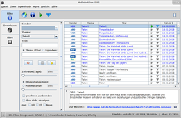
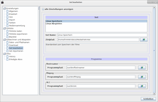

MediathekView
Dieser Artikel wurde für die folgenden Ubuntu-Versionen getestet:
Ubuntu 16.04 Xenial Xerus
Ubuntu 14.04 Trusty Tahr
Zum Verständnis dieses Artikels sind folgende Seiten hilfreich:
MediathekView  (früher nur Mediathek) ist ein Programm, mit dem in von etlichen öffentlich-rechtlichen Fernsehanstalten bereitgestellten Mediatheken Sendungen (oder Ausschnitte) betrachtet und auch gespeichert werden können. Das Programm ist in Java verfasst, funktioniert also unabhängig vom Betriebssystem des Computers.
(früher nur Mediathek) ist ein Programm, mit dem in von etlichen öffentlich-rechtlichen Fernsehanstalten bereitgestellten Mediatheken Sendungen (oder Ausschnitte) betrachtet und auch gespeichert werden können. Das Programm ist in Java verfasst, funktioniert also unabhängig vom Betriebssystem des Computers.
Momentan sind Sendungen von 3sat, ARD, ARTE (,  ), BR, DW , HR, KiKa, MDR, NDR, ORF, PHOENIX, RBB, SR, SWR, WDR, ZDF und dem Schweizer Fernsehen verfügbar. Es können bestimmte Themenbereiche oder Sender abonniert werden, ebenso wie etliche Podcasts. Auch als Flash-Medien eingestellte Beiträge können abgerufen werden, wenn diese mit RTMP gesendet werden. Dazu wird das Programm flvstreamer benötigt.
), BR, DW , HR, KiKa, MDR, NDR, ORF, PHOENIX, RBB, SR, SWR, WDR, ZDF und dem Schweizer Fernsehen verfügbar. Es können bestimmte Themenbereiche oder Sender abonniert werden, ebenso wie etliche Podcasts. Auch als Flash-Medien eingestellte Beiträge können abgerufen werden, wenn diese mit RTMP gesendet werden. Dazu wird das Programm flvstreamer benötigt.
Voraussetzungen¶
|  |
| MediathekView 13.0.2 |
Zur Verwendung ist eine Java-Laufzeitumgebung (JRE) ab Version 8 notwendig. Falls Probleme beim Einsatz von OpenJDK auftreten sollten, kann man stattdessen Oracle Java (ehemals Sun Java) ausprobieren.
Zusätzlich werden folgende Pakete [1] zur Wiedergabe und Aufnahme der Sendungen benötigt.
vlc (universe)
flvstreamer (universe)
ffmpeg (universe)
default-jre (universe, wird ab Version 12 und Ubuntu 16.04 benötigt)
openjfx (universe, wird ab Version 12 benötigt)
 mit apturl
mit apturl
Paketliste zum Kopieren:
sudo apt-get install vlc flvstreamer ffmpeg default-jre openjfx
sudo aptitude install vlc flvstreamer ffmpeg default-jre openjfx
64-bit-Rechner benötigen noch:
libxtst6:i386 (universe)
mit apturl
Paketliste zum Kopieren:
sudo apt-get install libxtst6:i386
sudo aptitude install libxtst6:i386
Installation¶
Das Programm ist zwar unter dem Namen mediathekview in den offiziellen Paketquellen enthalten [1], aber diese Versionen sind in der Regel veraltet. Daher wird eine manuelle Installation empfohlen.
Manuell¶
Das Programm wird auf der Projektseite als Archivdatei MediathekView-latest.tar.gz  angeboten. Das Archiv enthält alle benötigten Bibliotheken und muss heruntergeladen und entpackt werden [2], beispielsweise in den (vorher anzulegenden) Ordner ~/bin/MediathekView/ im Homeverzeichnis (oder alternativ nach /opt/MediathekView/, falls man es mehreren Anwendern auf demselben Rechner zur Verfügung stellen möchte).
angeboten. Das Archiv enthält alle benötigten Bibliotheken und muss heruntergeladen und entpackt werden [2], beispielsweise in den (vorher anzulegenden) Ordner ~/bin/MediathekView/ im Homeverzeichnis (oder alternativ nach /opt/MediathekView/, falls man es mehreren Anwendern auf demselben Rechner zur Verfügung stellen möchte).
Hinweis!
Fremdsoftware kann das System gefährden.
Das Programm kann im Terminal [3] über das mitgelieferte Shell-Skript ~/bin/MediathekView/MediathekView.sh oder mit
cd MEDIATHEKVIEW-ORDNER/ java -Xms128M -Xmx1G -jar /PFAD/ZU/MediathekView.jar
gestartet werden. Komfortabler ist es, sich einen Programmstarter [4] zu erstellen, unter ~/.local/share/applications/mediathekview.desktop zu speichern und das Programm darüber zu starten (BENUTZERNAME bitte anpassen):
[Desktop Entry] Name=MediathekView Comment=View streams from public German TV stations Comment[de]=Schaue Sendungen von Mediatheken öffentlicher Fernsehsender Exec=java -Xms128M -Xmx1G -jar /home/BENUTZERNAME/bin/MediathekView/MediathekView.jar Icon=/home/BENUTZERNAME/bin/MediathekView/Info/MediathekView.png Keywords=stream;television;German;public;TV;video;audio; Terminal=false Type=Application Categories=AudioVideo;Video;TV;
Zudem muss bei manchen Desktop-Umgebungen (Unity, GNOME, Xfce) die .jar- und die .desktop-Datei ausführbar gemacht werden, falls man das Programm über einen Dateimanager starten möchte (in den Datei-Eigenschaften unter "Berechtigungen" aktivieren) bzw. wenn es im Anwendungsmenü unter "Multimedia -> MediathekView" erscheinen soll.
Wenn eine systemweite Installation gewünscht ist, den entpackten Ordner mit Root-Rechten z.B. nach /opt kopieren und eine symbolische Verknüpfung (Symlink) anlegen.
Hinweis:
Wenn man nach /opt installiert, müssen die Pfade unter "Datei -> Einstellungen -> Aufzeichnen und Abspielen -> Set bearbeiten" kontrolliert werden.
Aktualisierung¶
Möchte man eine manuell installierte Version aktualisieren, erfolgt dies in drei Schritten:
Herunterladen der neuen Version
Löschen der Dateien der älteren Version. Der Ordner selbst wird im nächsten Schritt wiederverwendet.
Entpacken der aktuellen Version. Als Zielordner nimmt man den bereits vorhandenen Ordner.
Verwendung¶
Wenn ein Programmstarter angelegt wurde, findet man MediathekView bei Ubuntu-Varianten mit einem Anwendungsmenü unter "Multimedia -> MediathekView" [5].
Die Sendungen werden über die Schaltflächen unterhalb des Sendungsfensters abgerufen. Die Schaltfläche "Filminformationen" bietet einen komprimierten Überblick über die gerade ausgewählte Sendung. Zur Wiedergabe wird unter Linux standardmäßig VLC eingesetzt, zur Aufnahme kommen je nach Sender VLC oder flvstreamer zum Einsatz. Diese Vorgaben lassen sich über "Datei -> Einstellungen -> Aufzeichnen und Abspielen -> Set bearbeiten" auch verändern und den eigenen Bedürfnissen anpassen.
Konfiguration¶
|  |
| Einstellungen |
Nach dem Programmstart kann im Reiter "Filme" festgelegt werden, von welchen Sendern Beiträge bereitgehalten werden sollen. Über die Schaltfläche "  Filme laden" bzw. " Thema neu laden" (bei markiertem Thema) werden die Sendungen geladen, im Fenster angezeigt und sind so aufrufbar.
Filme laden" bzw. " Thema neu laden" (bei markiertem Thema) werden die Sendungen geladen, im Fenster angezeigt und sind so aufrufbar.
Über den Menü-Eintrag "Datei -> Einstellungen" können Angaben zum Programm selbst und zu den eingerichteten Programmen für das Herunterladen und die Wiedergabe der Filme gemacht werden. Außerdem kann ein Netzwerk-Proxy angegeben werden.
Die Konfigurationsdaten werden im Ordner ~/.mediathek3/ im Homeverzeichnis gespeichert (ab Version 3.0).
Problembehebung¶
Fensterposition¶
Unter Umständen kann die Fensterposition nicht gespeichert werden. Dadurch werden die Programmfenster von MediathekView immer an der oberen linken Ecke des Bildschirms ausgerichtet, wo sie vom Panel oder anderen Elementen überlagert wird. Ein Fenster kann mit gedrückter
Alt und gedrückter  verschoben werden, wenn sich der Mauszeiger innerhalb des Fenster befindet.
verschoben werden, wenn sich der Mauszeiger innerhalb des Fenster befindet.
Links¶
 Übersichtsartikel
Übersichtsartikel- Erstellt mit Inyoka
-
 2004 – 2017 ubuntuusers.de • Einige Rechte vorbehalten
2004 – 2017 ubuntuusers.de • Einige Rechte vorbehalten
Lizenz • Kontakt • Datenschutz • Impressum • Serverstatus -
Serverhousing gespendet von